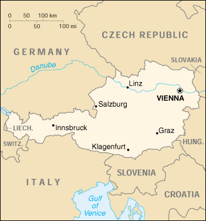

{kind=link}


| Austria |
|
|  | |
| Introduction |
Background: Once the center of power for the large Austro-Hungarian Empire, Austria was reduced to a small republic after its defeat in World War I. Following annexation by Nazi Germany in 1938 and subsequent occupation by the victorious Allies, Austria's 1955 State Treaty declared the country "permanently neutral" as a condition of Soviet military withdrawal. Neutrality, once ingrained as part of the Austrian cultural identity, has been called into question since the Soviet collapse and Austria's increasingly prominent role in European affairs. A prosperous country, Austria joined the European Union in 1995 and the euro monetary system in 1999.
| Geography |
Location: Central Europe, north of Italy and Slovenia
Geographic coordinates: 47 20 N, 13 20 E
Map references: Europe
Area:
total:
83,858 sq km
land:
82,738 sq km
water:
1,120 sq km
Area - comparative: slightly smaller than Maine
Land boundaries:
total:
2,562 km
border countries:
Czech Republic 362 km, Germany 784 km, Hungary 366 km, Italy 430 km, Liechtenstein 35 km, Slovakia 91 km, Slovenia 330 km, Switzerland 164 km
Coastline: 0 km (landlocked)
Maritime claims: none (landlocked)
Climate: temperate; continental, cloudy; cold winters with frequent rain in lowlands and snow in mountains; cool summers with occasional showers
Terrain: in the west and south mostly mountains (Alps); along the eastern and northern margins mostly flat or gently sloping
Elevation extremes:
lowest point:
Neusiedler See 115 m
highest point:
Grossglockner 3,798 m
Natural resources: iron ore, oil, timber, magnesite, lead, coal, lignite, copper, hydropower
Land use:
arable land:
17%
permanent crops:
1%
permanent pastures:
23%
forests and woodland:
39%
other:
20% (1996 est.)
Irrigated land: 40 sq km (1993 est.)
Natural hazards: NA
Environment - current issues: some forest degradation caused by air and soil pollution; soil pollution results from the use of agricultural chemicals; air pollution results from emissions by coal- and oil-fired power stations and industrial plants and from trucks transiting Austria between northern and southern Europe
Environment - international agreements:
party to:
Air Pollution, Air Pollution-Nitrogen Oxides, Air Pollution-Sulphur 85, Air Pollution-Sulphur 94, Air Pollution-Volatile Organic Compounds, Antarctic Treaty, Biodiversity, Climate Change, Desertification, Endangered Species, Environmental Modification, Hazardous Wastes, Law of the Sea, Nuclear Test Ban, Ozone Layer Protection, Ship Pollution, Tropical Timber 83, Tropical Timber 94, Wetlands, Whaling
signed, but not ratified:
Air Pollution-Persistent Organic Pollutants, Antarctic-Environmental Protocol, Climate Change-Kyoto Protocol
Geography - note: landlocked; strategic location at the crossroads of central Europe with many easily traversable Alpine passes and valleys; major river is the Danube; population is concentrated on eastern lowlands because of steep slopes, poor soils, and low temperatures elsewhere
| People |
Population: 8,131,111 (July 2000 est.)
Age structure:
0-14 years:
17% (male 697,283; female 663,459)
15-64 years:
68% (male 2,787,555; female 2,731,446)
65 years and over:
15% (male 474,067; female 777,301) (2000 est.)
Population growth rate: 0.25% (2000 est.)
Birth rate: 9.9 births/1,000 population (2000 est.)
Death rate: 9.91 deaths/1,000 population (2000 est.)
Net migration rate: 2.46 migrant(s)/1,000 population (2000 est.)
Sex ratio:
at birth:
1.05 male(s)/female
under 15 years:
1.05 male(s)/female
15-64 years:
1.02 male(s)/female
65 years and over:
0.61 male(s)/female
total population:
0.95 male(s)/female (2000 est.)
Infant mortality rate: 4.5 deaths/1,000 live births (2000 est.)
Life expectancy at birth:
total population:
77.68 years
male:
74.52 years
female:
80.99 years (2000 est.)
Total fertility rate: 1.39 children born/woman (2000 est.)
Nationality:
noun:
Austrian(s)
adjective:
Austrian
Ethnic groups: German 98%, Croatian, Slovene, other (includes Hungarians, Czechs, Slovaks, Roma)
Religions: Roman Catholic 78%, Protestant 5%, Muslim and other 17%
Languages: German
Literacy:
definition:
age 15 and over can read and write
total population:
98%
male:
NA%
female:
NA%
| Government |
Country name:
conventional long form:
Republic of Austria
conventional short form:
Austria
local long form:
Republik Oesterreich
local short form:
Oesterreich
Data code: AU
Government type: federal republic
Capital: Vienna
Administrative divisions: 9 states (bundeslaender, singular - bundesland); Burgenland, Kaernten, Niederoesterreich, Oberoesterreich, Salzburg, Steiermark, Tirol, Vorarlberg, Wien
Independence: 1156 (from Bavaria)
National holiday: National Day, 26 October (1955)
Constitution: 1920; revised 1929 (reinstated 1 May 1945)
Legal system: civil law system with Roman law origin; judicial review of legislative acts by the Constitutional Court; separate administrative and civil/penal supreme courts; has not accepted compulsory ICJ jurisdiction
Suffrage: 19 years of age; universal; compulsory for presidential elections
Executive branch:
chief of state:
President Thomas KLESTIL (since 8 July 1992)
head of government:
Chancellor Wolfgang SCHUESSEL (OeVP)(since 4 February 2000); Vice Chancellor Susanne RIESS-PASSER (FPOe) (since 4 February 2000)
cabinet:
Council of Ministers chosen by the president on the advice of the chancellor
elections:
president elected by direct popular vote for a six-year term; presidential election last held 19 April 1998 (next to be held in the spring of 2004); chancellor traditionally chosen by the president from the plurality party in the National Council; in the case of the current coalition, the chancellor was chosen from another party after the plurality party failed to form a government; vice chancellor chosen by the president on the advice of the chancellor
election results:
Thomas KLESTIL reelected president; percent of vote - Thomas KLESTIL 63%, Gertraud KNOLL 14%, Heide SCHMIDT 11%, Richard LUGNER 10%, Karl NOWAK 2%
note:
government coalition - FPOe and OeVP
Legislative branch:
bicameral Federal Assembly or Bundesversammlung consists of Federal Council or Bundesrat (64 members; members represent each of the states on the basis of population, but with each state having at least three representatives; members serve a four- or six-year term) and the National Council or Nationalrat (183 seats; members elected by direct popular vote to serve four-year terms)
elections:
National Council - last held 3 October 1999 (next to be held in the fall of 2003)
election results:
National Council - percent of vote by party - SPOe 33.2%, OeVP 26.9%, FPOe 26.9%, Greens 7.4%; seats by party - SPOe 65, OeVP 52, FPOe 52, Greens 14
Judicial branch: Supreme Judicial Court or Oberster Gerichtshof; Administrative Court or Verwaltungsgerichtshof; Constitutional Court or Verfassungsgerichtshof
Political parties and leaders: Austrian People's Party or OeVP [Wolfgang SCHUESSEL, chairman]; Communist Party or KPOe [Walter BAIER, chairman]; Freedom Party of Austria or FPOe [Susanne RIESS-PASSER]; Liberal Forum or LF [Heide SCHMIDT]; Social Democratic Party of Austria or SPOe [Viktor KLIMA, chairman]; The Greens or GA [Alexander VAN DER BELLEN, party spokesman]
Political pressure groups and leaders: Austrian Trade Union Federation (primarily Socialist) or OeGB; Federal Economic Chamber; OeVP-oriented League of Austrian Industrialists or VOeI; Roman Catholic Church, including its chief lay organization, Catholic Action; three composite leagues of the Austrian People's Party or OeVP representing business, labor, and farmers
International organization participation: AfDB, AsDB, Australia Group, BIS, BSEC (observer), CCC, CE, CEI, CERN, EAPC, EBRD, ECE, EIB, EMU, ESA, EU, FAO, G- 9, IADB, IAEA, IBRD, ICAO, ICC, ICFTU, ICRM, IDA, IEA, IFAD, IFC, IFRCS, ILO, IMF, IMO, Intelsat, Interpol, IOC, IOM, ISO, ITU, MINURSO, NAM (guest), NEA, NSG, OAS (observer), OECD, OPCW, OSCE, PCA, PFP, UN, UNCTAD, UNDOF, UNESCO, UNFICYP, UNHCR, UNIDO, UNIKOM, UNITAR, UNMIBH, UNMIK, UNMOT, UNOMIG, UNTAET, UNTSO, UPU, WCL, WEU (observer), WFTU, WHO, WIPO, WMO, WToO, WTrO, ZC
Diplomatic representation in the US:
chief of mission:
Ambassador Peter MOSER
chancery:
3524 International Court NW, Washington, DC 20008-3035
telephone:
[1] (202) 895-6700
FAX:
[1] (202) 895-6750
consulate(s) general:
Chicago, Los Angeles, and New York
Diplomatic representation from the US:
chief of mission:
Ambassador Kathryn Walt HALL
embassy:
Boltzmanngasse 16, A-1091, Vienna
mailing address:
use embassy street address
telephone:
[43] (1) 313-39
FAX:
[43] (1) 310-0682
Flag description: three equal horizontal bands of red (top), white, and red
| Economy |
Economy - overview: Austria with its well-developed market economy and high standard of living is closely tied to other EU economies, especially Germany's. Membership in the EU has drawn an influx of foreign investors attracted by Austria's access to the single European market. Through privatization efforts, the 1996-98 budget consolidation programs, and austerity measures, Austria has brought its total public sector deficit down to 2.1% of GDP in 1999 and public debt - at 63.1% of GDP in 1998 - more or less in line with the 60% of GDP required by the EMU's Maastricht criteria. Cuts mainly have affected the civil service and Austria's generous social benefit system, the two major causes of the government's deficit. To meet increased competition from both EU and Central European countries, Austria will need to emphasize knowledge-based sectors of the economy and deregulate the service sector. Growth, which slowed to 2.0% in 1999, probably will rebound to 2.8% in both 2000 and 2001.
GDP: purchasing power parity - $190.6 billion (1999 est.)
GDP - real growth rate: 2% (1999 est.)
GDP - per capita: purchasing power parity - $23,400 (1999 est.)
GDP - composition by sector:
agriculture:
1.3%
industry:
32.4%
services:
66.3% (1998 est.)
Population below poverty line: NA%
Inflation rate (consumer prices): 0.5% (1999)
Labor force: 3.7 million (1999)
Labor force - by occupation: services 68%, industry and crafts 29%, agriculture and forestry 3% (1999 est.)
Unemployment rate: 4.4% (1999)
Budget:
revenues:
$54 billion
expenditures:
$59.5 billion, including capital expenditures of $NA (1999 est.)
Industries: construction, machinery, vehicles and parts, food, chemicals, lumber and wood processing, paper and paperboard, communications equipment, tourism (1997)
Industrial production growth rate: 2.3% (1999)
Electricity - production: 56.066 billion kWh (1998)
Electricity - production by source:
fossil fuel:
31.46%
hydro:
65.92%
nuclear:
0%
other:
2.62% (1998)
Electricity - consumption: 51.891 billion kWh (1998)
Electricity - exports: 10.5 billion kWh (1998)
Electricity - imports: 10.25 billion kWh (1998)
Agriculture - products: grains, potatoes, sugar beets, wine, fruit; dairy products, cattle, pigs, poultry; lumber
Exports: $62.9 billion (1999 est.)
Exports - commodities: machinery and equipment, paper and paperboard, metal goods, chemicals, iron and steel; textiles, foodstuffs (1998)
Exports - partners: EU 65% (Germany 36%, Italy 9%, France 5%), Switzerland 5%, Hungary 5%, US 4.5% (1999 est.)
Imports: $69.9 billion (1999 est.)
Imports - commodities: machinery and equipment, chemicals, metal goods, oil and oil products; foodstuffs (1998)
Imports - partners: EU 70% (Germany 42%, Italy 8%, France 5%), US 5%, Hungary 3%, Switzerland 3% (1999 est.)
Debt - external: $31.7 billion (1998)
Economic aid - donor: ODA, $452 million (1998)
Currency: 1 Austrian schilling (AS) = 100 groschen
Exchange rates:
euros per US$1 - 0.9867 (January 2000), 0.9386 (1999); Austrian schillings (AS) per US$1 - 11.86 (January 1999), 12.91 (1999), 12.379 (1998), 12.204 (1997), 10.587 (1996), 10.081 (1995)
note:
on 1 January 1999, the EU introduced a common currency that is now being used by financial institutions in some member countries at a fixed rate of 13.7603 Austrian shillings per euro; the euro will replace the local currency in consenting countries for all transactions in 2002
Fiscal year: calendar year
| Communications |
Telephones - main lines in use: 3.726 million (plus 83,100 ISDN or Integrated Services Digital Network connections) (1997)
Telephones - mobile cellular: 2.31 million (1998)
Telephone system:
domestic:
highly developed and efficient
international:
satellite earth stations - 2 Intelsat (1 Atlantic Ocean and 1 Indian Ocean) and 2 Eutelsat
Radio broadcast stations: AM 1, FM 61 (plus several hundred repeaters), shortwave 1 (1998)
Radios: 6.08 million (1997)
Television broadcast stations: 51 (plus 920 repeaters) (1999)
Televisions: 4.25 million (1997)
Internet Service Providers (ISPs): 35 (1999)
| Transportation |
Railways:
total:
6,123 km (3,523 km electrified)
standard gauge:
5,639 km 1.435-m gauge (3,429 km electrified)
narrow gauge:
484 km (13 km 0.600-m gauge, 468 km 0.760-m gauge - 94 km electrified, and 3 km 0.600-m gauge) (1999)
Highways:
200,000 km
paved:
200,000 km (including 1,613 km of expressways)
unpaved:
0 km (1999)
Waterways: 358 km (1999)
Pipelines: crude oil 777 km; natural gas 840 km (1999)
Ports and harbors: Linz, Vienna, Enns, Krems
Merchant marine:
total:
20 ships (1,000 GRT or over) totaling 65,284 GRT/91,951 DWT
ships by type:
bulk 1, cargo 15, combination bulk 2, container 2 (1999 est.)
Airports: 55 (1999 est.)
Airports - with paved runways:
total:
22
over 3,047 m:
1
2,438 to 3,047 m:
5
1,524 to 2,437 m:
1
914 to 1,523 m:
3
under 914 m:
12 (1999 est.)
Airports - with unpaved runways:
total:
33
914 to 1,523 m:
4
under 914 m:
29 (1999 est.)
Heliports: 1 (1999 est.)
| Military |
Military branches: Army (includes Flying Division)
Military manpower - military age: 19 years of age
Military manpower - availability:
males age 15-49:
2,088,993 (2000 est.)
Military manpower - fit for military service:
males age 15-49:
1,733,681 (2000 est.)
Military manpower - reaching military age annually:
males:
51,335 (2000 est.)
Military expenditures - dollar figure: $1.7 billion (FY98)
Military expenditures - percent of GDP: 1.2% (FY98)
| Transnational Issues |
Disputes - international: none
Illicit drugs: transshipment point for Southwest Asian heroin and South American cocaine destined for Western Europe